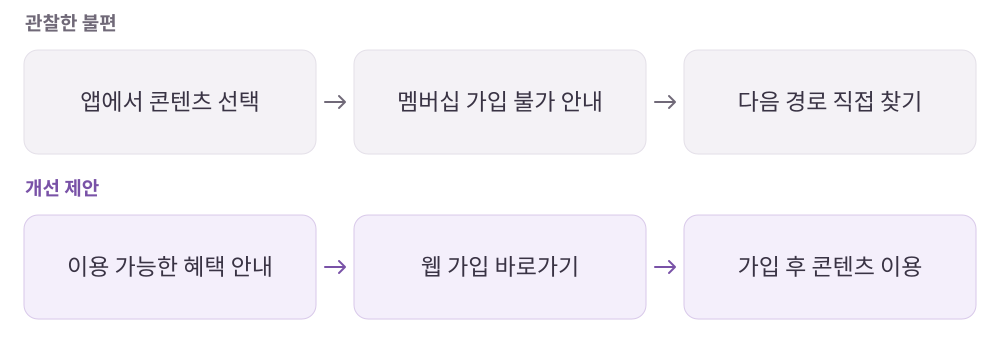

퍼블리
틈틈이 읽는 사람에게는, 돌아올 자리가 필요하다.
일을 더 잘하고 싶은 사람에게 실무 노하우와 템플릿을 제공하는 커리어 콘텐츠 구독 서비스.
개인 학습 기록 · 원문에 기록한 당시의 경험을 재구성했습니다. 기획 의도는 개인 해석이며 개선안·확인 지표는 검증 전 제안입니다.
01사용자와 해결 방향
누구를 위한 서비스인가학습할 시간은 부족하지만 업무 문제를 빠르게 해결하고 싶은 직장인.
Why · 사용자의 필요
방대한 정보 중 지금 필요한 내용을 찾기 어렵고, 매번 동료에게 물어보기도 부담스럽다.
What · 서비스의 답
실무 콘텐츠·템플릿을 모으고 짧은 시간에도 고르고 읽고 다시 볼 수 있는 학습 경험을 제공한다.
02핵심 기능과 벤치마킹
- 분량·분류 안내
- 읽기 전 필요한 시간과 주제를 판단.
- 이어보기·형광펜
- 중단한 읽기를 이어가고 중요한 내용을 다시 찾음.
- 발행 예약·학습 알림
- 관심 콘텐츠의 발행과 학습 습관을 재방문 동기로 연결.
비교해서 살펴본 지점
- 커리어리
- 콘텐츠 학습에서 현직자와의 소통으로 이어지는 접점.
- 커리어리 스킬업
- 주제와 관련된 강의로 학습을 확장하는 연결 가능성.
03사용자 흐름과 기획 의도
막힌 가입 안내를 다음 행동으로 연결

관찰한 경험
- 이어보기, 분량·분류 표시, 형광펜, 발행 예정 콘텐츠 알림을 살펴봤습니다.
- 분석 당시 앱과 웹으로 나뉜 멤버십 관리 동선과 여러 단계의 콘텐츠 탐색에서 불편을 기록했습니다.
왜 이렇게 설계했을까 · 나의 해석
- 짧게 읽고 나가는 행동을 실패로 보지 않고, 다시 이어 읽을 수 있게 설계하는 점에 주목했습니다.
- 읽을거리의 양보다 필요한 정보를 찾는 시간과 다시 돌아오는 계기가 중요하다고 봤습니다.
04문제와 개선 제안
Pain Point · 걸리는 지점
- 앱에서 멤버십에 가입할 수 없다는 안내만으로는 다음 행동이 분명하지 않았다.
- 결제 내역과 해지 등 멤버십 관리가 앱 안에서 이어지지 않았다.
- 주제별 하위 분류를 여러 번 거쳐야 특정 정보를 찾을 수 있었다.
내가 바꿔본다면
- 가입 불가 안내 대신 웹에서 할 수 있는 다음 행동과 혜택을 함께 안내.
- 저자·질문·강의 간 연결을 강화하고, 검색한 주제의 관련 내용을 AI로 정리하는 탐색 방식 검토.
확인할 지표 · 검증 계획 제안
멤버십 안내에서 웹 이동·가입 완료까지의 전환과 앱 복귀율, 검색 후 원하는 콘텐츠 도달 시간을 확인한다.
05장점과 아쉬운 지점
좋았던 점
- 정보와 템플릿이 모여 있어 자료 탐색 시간을 줄인다.
- 이어보기와 표시 기능이 틈새 학습에 맞춰져 있다.
아쉬운 점 · 더 살필 점
- 콘텐츠에 들어가기 전의 가입·관리 동선이 학습의 진입 장벽이 될 수 있다.
06내가 주목한 점
- 불가능하다는 안내 뒤에는 가능한 다음 행동과 이동 경로를 제공할 것.
- 이어보기에는 사용자별 읽기 상태의 저장·복원 기준이 필요하다.
- 구독 콘텐츠의 공유·저작권·포인트 정책도 이용 경험의 일부로 정리할 것.
분석 원문퍼블리 · 노션 원문 ↗